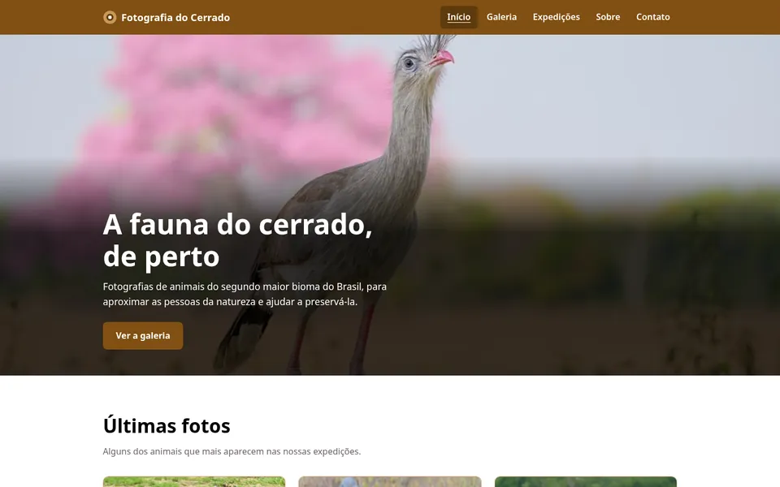

← 전체 포트폴리오
회사 소개 사이트
Fotografia do Cerrado
야생동물 사진 회사. 필터가 있는 갤러리, 촬영 여행, 연락처. 색상은 세하두(브라질의 사바나)에서 가져왔고, 모든 색을 WCAG 명도 대비 기준으로 확인했습니다.

과제
색상 팔레트와 WCAG 과제였어요. 고른 색으로 작은 화면을 만들고 모든 글자가 읽힌다는 걸 보여 주는 것이었죠. 그 규칙을 지키면서 사이트 하나가 됐어요.
만든 것
- 존재하지 않는 야생동물 사진 스튜디오의 여섯 페이지. 필터와 확대 사진이 있는 갤러리, 자주 묻는 질문이 있는 탐사, 소개, 연락처.
- 탐사 페이지에서 달을 고르면 그때의 세하두 모습과 가장 좋은 시기의 탐사를 볼 수 있고, 갤러리에서는 화살표나 밀기로 확대 사진을 넘겨 볼 수 있어요.
- 팔레트는 세하두 자체에서 가져왔어요. 나무껍질의 갈색, 마른 풀, 흙. 소개 페이지에서 색마다 잰 대비를 볼 수 있어요.
- 라이트 모드와 다크 모드. 시스템 설정을 따르고 선택을 기억하며, 열 때 밝은 화면이 깜빡이지 않아요.
- 위키미디어 공용의 자유 사진을 쓰고, 사진마다 작가와 라이선스를 출처 페이지에 적었어요.
작동 방식
- 라이브러리 없는 HTML, CSS, JavaScript. HTML 안에 스타일은 하나도 없어요.
- 두 모드 모두 모든 글자가 4.5:1 이상, 초점이 보이고 메뉴는 키보드로 쓸 수 있어요.
- 13개 언어, 데모 양식은 페이지의 언어로 답해요.
당신의 비즈니스에도 이런 사이트를
하시는 일과 생각하는 것을 알려 주세요. 아이디어만 있어도 괜찮습니다. 질문과 다음 단계를 담아 답장드립니다.